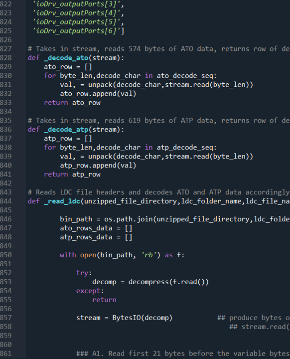
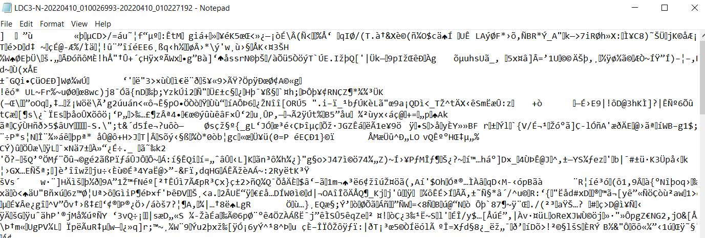
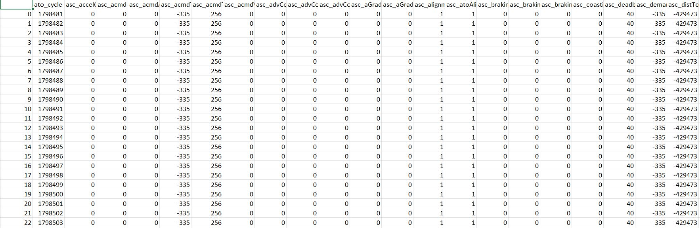
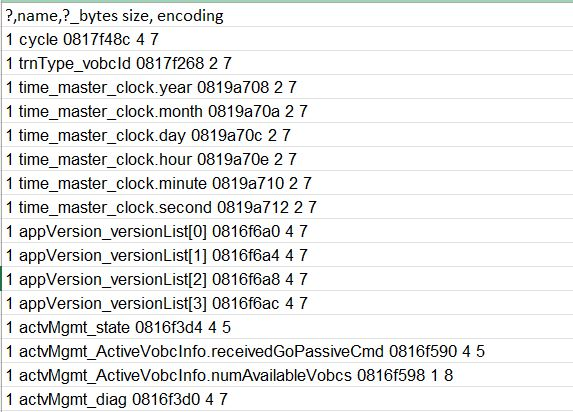
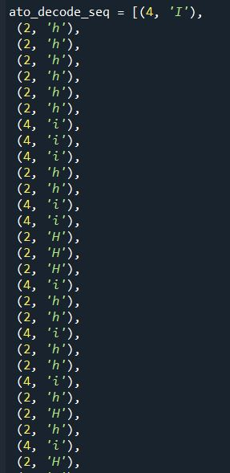
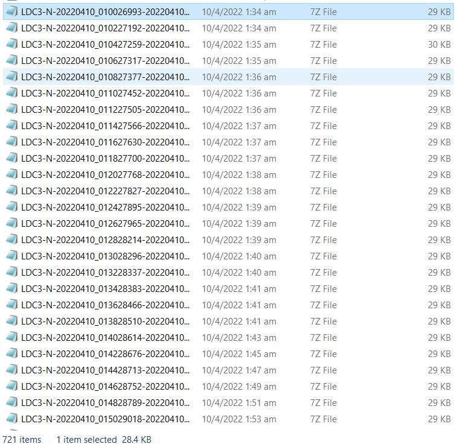
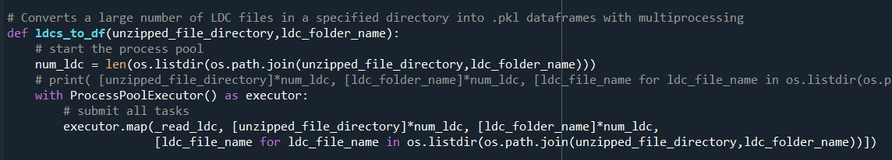
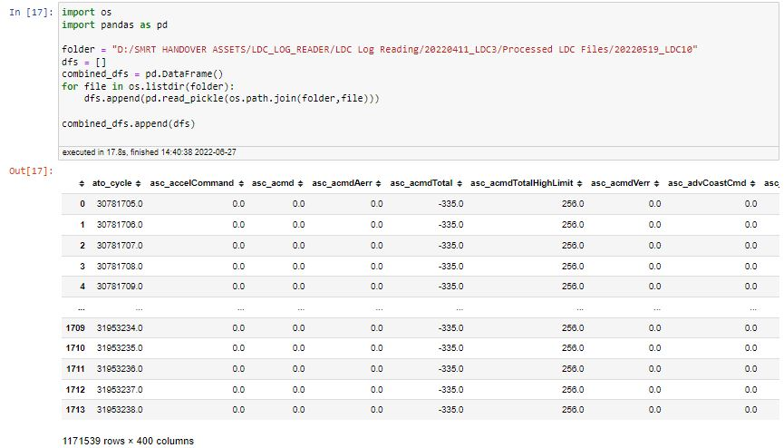

Unpacking a byte stream using ProcessPoolExecutor and struct unpack
This piece of work was based on a request to decrypt signalling data between the train and track wayside response units. As the data is normally extracted, processed and analyzed by the service provider, the company had limited understanding and control over the data they 'own'. By being able to convert the encrypted data into a readable form, the company is able to interpret the data internally unbeholden to the contractor. A useless bit of the encrypted and processed data is as seen below:
 The strategy was relatively simple, I requested for the technical specifications of the data stream being logged which must be documented as part of the service being provided. These specifications specify the sequence in which the bytes are stored and the format in which the bytes should be read. The format was almost exactly like a dictionary.
I then ran a script that basically (i) decoded how to determine how to unpack each segment of bytes and (ii) sequenced a series of read operations based on how the bytes are to be unpacked. Note that this is executed on the main body of data after the header of the datafile has been read - each header is unique and not necessarily a fixed sequence of byte reads (of a given length and format). The output is a list of tuples of byte length and unpacking format which is fed into the unpacking function to read the byte stream directly.
Due to the large number of raw datafiles to be read (approximately 720x400 generated every day). The time taken to process the files into a readable format exceeds the rate at which data is generated. This calls for multiprocessing.
By using the ProcessPoolExecutor function that comes in one of the Python libraries I was able to essentially distribute the list of datafiles to be processed across multiple processors instead of just using a single processor at a time. This basically sped up the processing speed by about 5 times, keeping it to around 16 hours. The segment of code which does this is very efficient and maps a function to specified range of filenames within the folder, assigning filenames to available processors whenever a file has been processed.
The processed files are then stored in an output folder 1-1 as a dataframe pickle to be recombined and analyzed as required. A better set-up would be for the processed files to be directly stored in an online database by appending them to relevant tables either by date or the logger from which the data came from. This will be much more efficient as calls can be made directly to aggregated data and existing tables as opposed to an aggregation of possibly huge amounts of data every time a specific set of data is to be analyzed.
